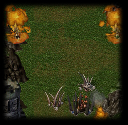
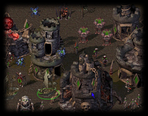

Strategic Depth
|
A game with strategic depth is a game where the player is constantly confronted with
meaningful choices -- a game where the player must constantly be thinking of what they
plan on doing next, two minutes from now, or even towards the end of the game.
Strifeshadow achieves strategic depth with two core things. The first is that we have carefully designed each unit to have a unique purpose that makes it a useful part of a number of strategies. These units are not only unique compared to other units of the same race (side), but almost always unique when compared to other races' units as well. |  |
These unique units produce a variety of choices for the player-- not just 12 choices per race, but in fact hundreds of choices, all of which have practical applications since combinations of units are typically more useful than just one type of unit alone. Add the fact that players must carefully select their units in order to counter what their opponent is up to, and decide not just what but when and where to produce units and you are left with a game that is very difficult to master, but extremely easy to learn. Chess is strategically deep for similar reasons -- the nuances of the interactions of the pieces and the timing associated with them are extremely difficult to master, but the basic rules are easy to learn.
The second core thing that greatly enhances Strifeshadow's strategic depth is the fact it will be a well-balanced game. Balance in this context means that if a player has several choices in front of them, it is not completely obvious which one is actually the best, even though it is completely clear as to how they are different. Another subtlety of balance is that of how the player spends his or her time. One example of this is the distinction between micro-management and macro-management oriented playstyles that is often drawn in RTS games. A micro-management oriented player tends to focus on battles heavily, giving orders to individual units to win victory. A macro-management oriented player ignores battles for the most part, instead focusing on streamlining their production so as to overwhelm a micro-manager. Both are viable in Strifeshadow, and this is only beacuse the player must pick and choose where to spend his or her time, and cannot manage to do both.
Although Strifeshadow will be balanced during the beta testing period, there are a lot of subtle behind-the-scenes features to make play balance a realized state with minimal testing. Should play balance issues emerge after release, they will be remedied.
|  Strifeshadow has a wide array of unique units, which add to the depth of the gameplay. | An example of strategic depth in Strifeshadow is present in the Dark Elves' early build choices. A player could play a number of basic strategies, including fast Carvers, slow (but more) Carvers, a Carver/Marksmen mix, massed Moag Raiders (Carvers & Moags), a fast Moag rush, a Marksmen rush, a fast technology climb to the Conclave structure, the Grenadier/Carver push, and power expansion just to name a few. All are completely distinct, and there are many, many more. Each also has cases where they would be perfectly useful and reasonable strategies to play. For instance, a fast Moag rush is extremely good on larger maps where you anticipate your opponent doing a power expansion build, while a Moag Raiders build could beat out slow Carvers in most cases, but is mediocre at best against Carver/Marksmen. |
Strifeshadow, Ethermoon Entertainment and their respective logos are trademarks of Martin Snyder